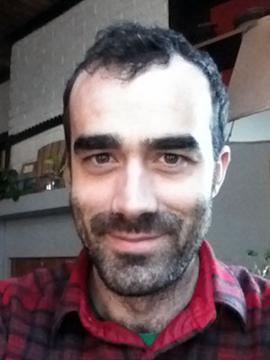
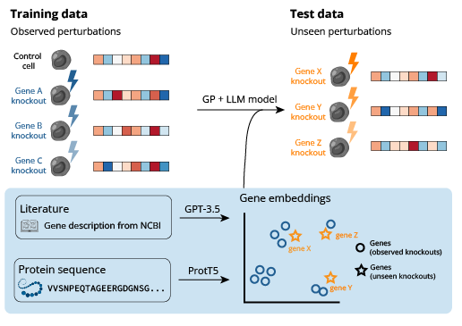
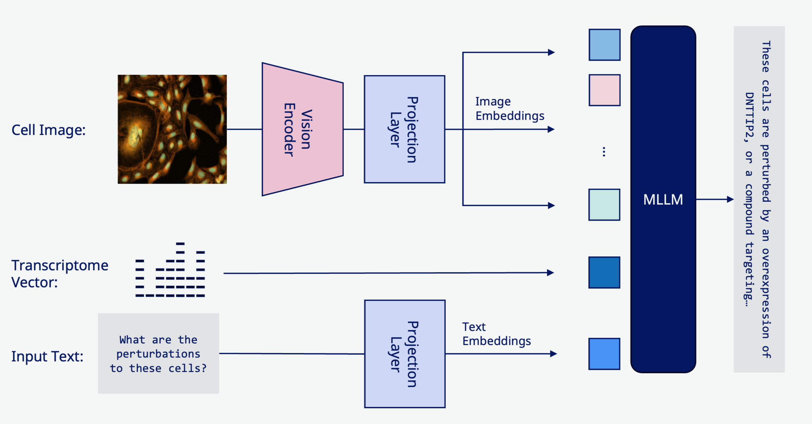
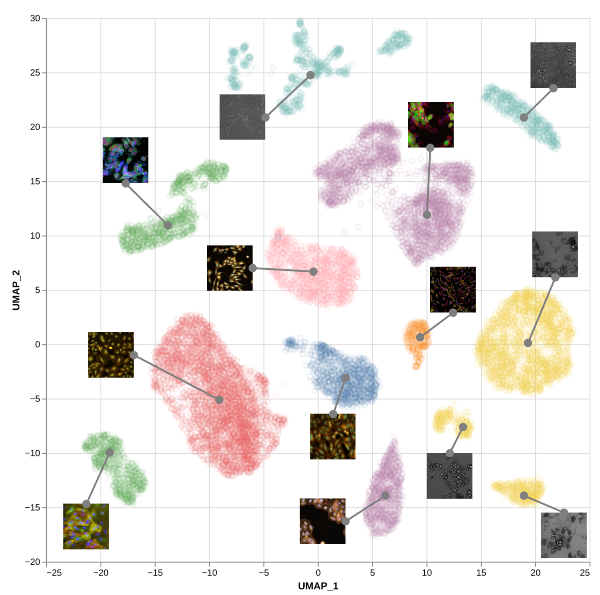
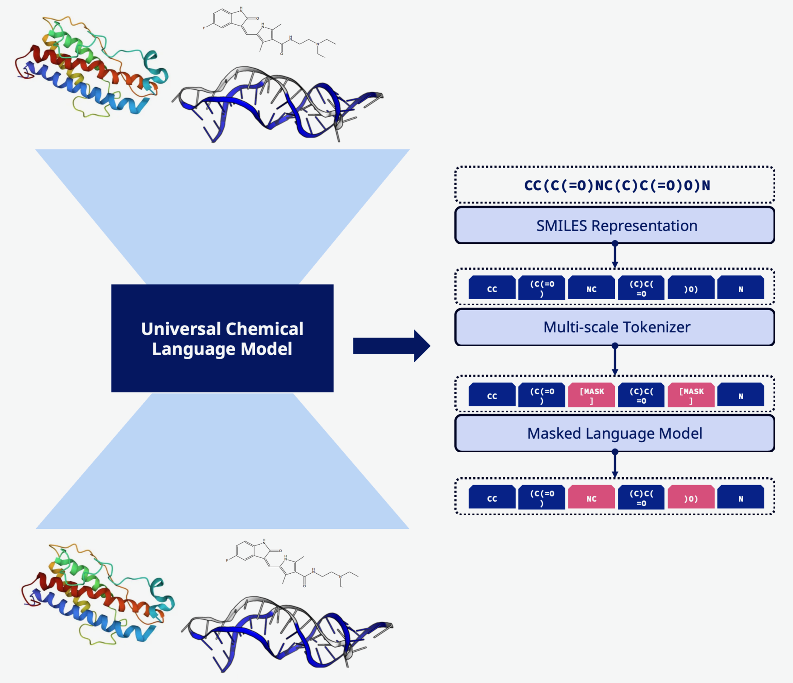
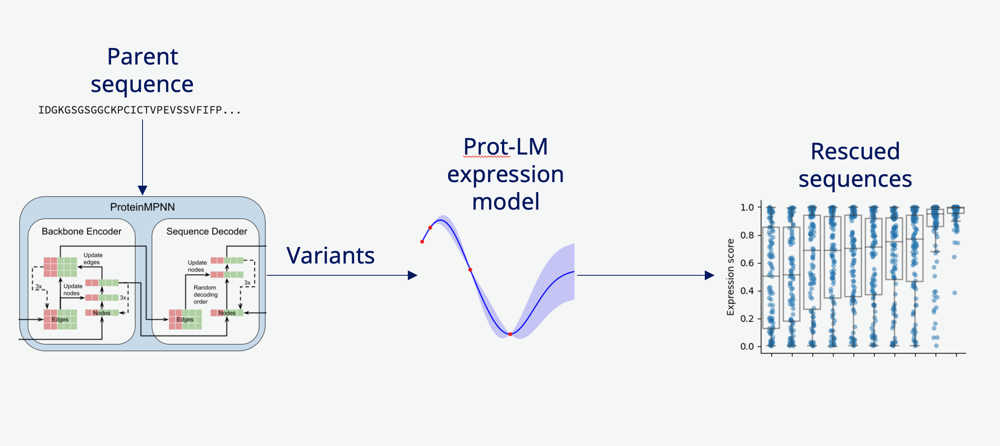
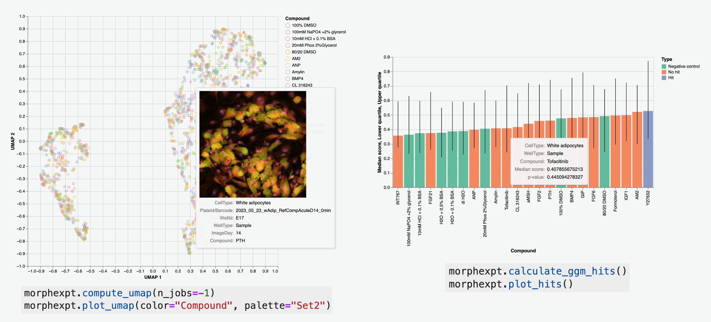
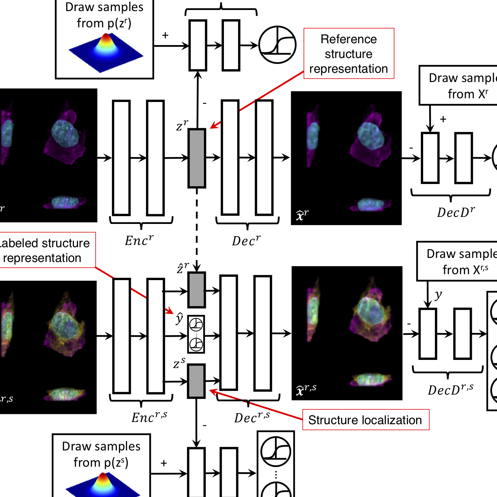

Rory Donovan-Maiye
Senior Scientist
Biological Foundation Models
Applied Computational Biology and Machine Learning
Senior Scientist
Biological Foundation Models
Applied Computational Biology and Machine Learning


Genetic perturbations are key to understanding how genes regulate cell behavior, yet the ability to predict responses to these perturbations remains a significant challenge. While numerous generative models have been developed for perturbation data, they typically lack the capability to generalize to perturbations not encountered during training. To alleviate this limitation, we introduce a novel methodology that incorporates prior knowledge through embeddings derived from Large Language Models (LLMs), effectively informing our predictive models with a deeper biological context. By leveraging this source of pre-existing information, our models achieve state-of-the-art performance in predicting the outcomes of single-gene perturbations.

Generating image-based phenotype responses to cellular perturbations in silico, and vice versa to integrate multiple screening modalities and provide in silico predictions to efficiently guide further wet-lab experiments. "Stable diffusion but for biology," if you like. Work in progress.

Self-supervised representation learning of cellular morphology / perturbation state across cell types and image modalities to build a foundational vision model capable of universally embedding all in vitro cellular image modalities. Work in progress.

Protein, DNA, RNA, and small molecule language models have strong in-domain performance but lack generality: e.g., protein language models don't understand chemical modification / non-natural amino acids, but peptides with such properties are crucial therapeutic targets. Using self-supervision and hierarchical / stochastic tokenization schemes, we train a truly general language model on the entirety of biologically-relevant molecule space, for universally applicable embeddings and generative models. Work in progress.

Coupling inverse folding sequence generators with an in-house LLM-based expression prediction model, we rescue non- and low-expressing proteins of interest by proposing variant sequences that reliably express at 10-100x the level of the parent sequence. Work in progress.
Accurately predicting half-life and clearance rate for monomer and multimer peptide / small protein therapeutics from historical data to reduce the need for pre-clinical animal trials. We use multitask Gaussian processes to leverage and factor all high dimension data relationships of interest, and make uncertainty-quantified predictions for novel molecular entities. Work in progress.

Foundational image / multimodal models are data hungry; to efficiently feed them with new data it's imperative to make data QC, collation, processing, analysis, and modeling as modular, performant, and painless as possible. A Python library with templated HPC workflows, a modular CLI, pre-prepared analysis notebooks, and import /export image QC enables rapid, reproducible, and verifiable microscope → knowledge distillation, as well as efficient data curation for training large foundational models. Work in progress, to be open-sourced.

We introduce a framework for end-to-end integrative modeling of 3D single-cell multi-channel fluorescent image data of diverse subcellular structures. We employ stacked conditional β-variational autoencoders to first learn a latent representation of cell morphology, and then learn a latent representation of subcellular structure localization which is conditioned on the learned cell morphology. Paper link
I live on Vashon Island. I work at Novo Nordisk, training and applying multimodal biological foundation models to extracting knowledge from high dimensional experimental data.
Before that, I was a a Sr. Modeling Scientist at the Allen Insitute for Cell Science and a postdoc at the Institute for Systems Biology with the Hood-Price Lab .
I went grad school at
CMU & Pitt, where I was advised by
Dan Zuckerman,
and worked with
Jim Faeder,
Chris Langmead,
Markus Dittrich,
Bob Murphy, and
Takis Benos
.